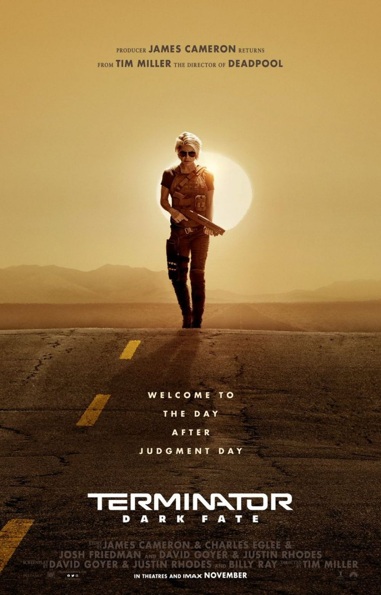
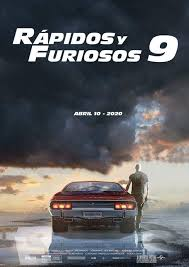
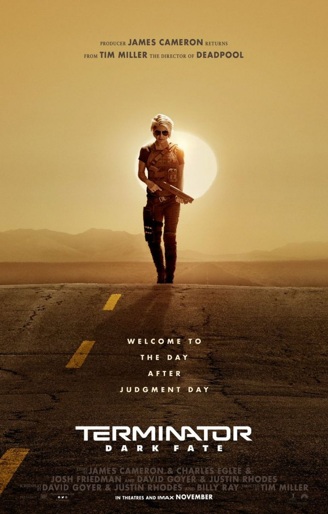
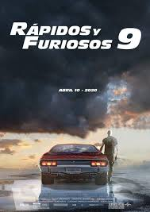

En esta seccion encontraras toda la informacion que necesites acerca de los nuevos estrenos
del cine, fechas de lanzamiento, trailers, detalles de grabacion y novedades acerca de los actores ademas
podras guiarte por la puntuacion que dan otros usuarios a dichas peliculas.
podras descargar estar peliculas en tu ordenador y verlas cuando quieras en la mejor definicion disponible.
detective pikachu
La historia comienza cuando el gran detective privado Harry Goodman desaparece misteriosamente;
Tim, su hijo de 21 años, debe averiguar qué sucedió. En la investigación lo ayuda el antiguo
compañero Pokémon de Harry, el Detective Pikachu: un super detective adorable, ocurrente y graciosísimo
que se asombra incluso a sí mismo. Tim y Pikachu se dan cuenta que increíblemente pueden comunicarse,
y unen fuerzas en una aventura emocionante para develar el misterio enmarañado. Mientras buscan pistas
en las calles resplandecientes de Ryme City, una vasta metrópolis moderna donde los humanos y
los Pokémon comparten un mundo real hiperrealista, encuentran distintos personajes Pokémon y
descubren un complot impactante que podría destruir la convivencia pacífica y amenazar a todo
el universo Pokémon.
Esta sexta entrega de la saga ideada por James Cameron (Avatar, Aliens: El regreso),
también productor del filme, está dirigida por Tim Miller (Deadpool).
El actor Arnold Schwarzenegger (Una historia de venganza, Los mercenarios 3) encarna de
nuevo al Terminator modelo T-800 y Linda Hamilton (La reina de las sombras, Bad Behavior)
regresa interpretando el papel de Sarah Connor, mientras que en el reparto también encontramos
a Mackenzie Davis (las series Halt and Caltch Fire y Black Mirror), Natalia Reyes
(Pájaros de verano), Diego Boneta (Luis Miguel: La serie) y a Gabriel Luna
(Agents of S.H.I.E.L.D.), que da vida a una versión moderna de este asesino de Skynet.
Un spin-off de 'Fast & Furious' centrado en el Agente de Seguridad Diplomática Luke Hobbs
que acabará formando una dudosa alianza con Decker Shaw. Cuando un anarquista mejorado
ciber-genéticamente llamado Brixton consigue robar una peligrosa arma biológica, el mundo
se enfrenta a unas de sus mayores amenazas. Ahí es cuando Hobbs y Shaw tendrán que
juntos para salvar el planeta de este terrorista, que incluso ha conseguido derrotar a la
hermana de Shaw, Hattie una intrépida agente secreta del M16. La película está dirigida por
David Leich. El reparto está formado por Dwayne "La Roca' Johnson y Jason Statham como los
personajes de Hobbs y Shaw respectivamente, que ya hemos visto en otras entregas, además de
Idris Elba ('Luther'), Vanessa Kirby ('The Crown') y Eiza González ('Baby Driver'), entre
otros

 


